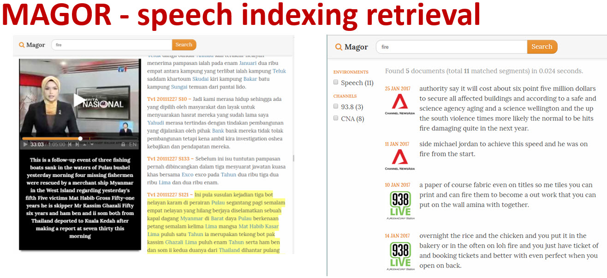
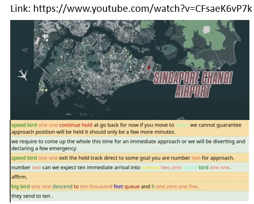

Section 2.1 Speech and Language laboratory
¶The speech and language research group in SCSE was founded in 2007 by Chng Eng Siong and Prof Li Haizhou (now in CUHK-Shenzen, China). The group is now situated within HESL Lab - N4-B2b-05 in SCSE. We also founded the AISG Speech Lab funded by NRF since 2018~current.
Subsection 2.1.1 Research Focus
Our research interest is primarily speech and language processing, classifications using ML:
-
ASR and LLM- Using LLM to improve ASR by generative error correction: see
Hyporadise - Code-switch multi-lingual speech recognition: see
Audio to Byte - Robust Large vocabulary continuous speech recognition: joint end-to-end ASR with speech enhancement module, wave2vec2, speaker extraction
- Speech enhancement: speaker extraction, denoising, feature enhancement, overlapping speech extraction
- Faster decoding with end-to-end and real time android based decoders
- Tranfer Learning: from large trained acoustic model (16KHz) to 8KHz models via transfer learning
- Using LLM to improve ASR by generative error correction: see
-
Classification- Noisy Audio event and scene classifications, Audio captioning
DCase - Speaker identification and speaker diarization: diarization, VAD, and speaker extraction issues, see
Microsoft diarization approach - Deep Fake Detection (and generation)
Link
- Noisy Audio event and scene classifications, Audio captioning
-
Towards Speech Understanding- some aspects of NLP such as topic detection, name entity recognition, text normalization. See a demo of our ASR for ATC speech with NER highlighting.ATC with NER
Examples of relevant papers to the research area include: sequence to sequence model which has been widely studied in machine translation. The problems we are keen on include
- Code switch end to end and Adaptation -> how to improve the model in certain target environment (speaker, noise, type of dialogues), etc.
Code-switch End-to-end - Classification-> what type of sound is this?
Audio Scene and Event Analysis - Speaker id: who spoke it:
speaker idunderoverlapping conditionandwhen (Diarization). - Speech Enhancement -
speaker extractionandderevberation.
Subsection 2.1.2 Demos
Some of our previous works:
-
Youtube recordings: Our code-switch speech recognition in action:
Source separation - Separating Hillary Clinton and Trump voice from Youtube recording, from Chenglin's
Demo slide(Oct 2018)Speech indexing using our MAGOR system (Code-switch English/Mandarin and Malay system)
See a demo of our ASR for ATC speech with NER highlighting.
ATC with NER
Subsection 2.1.3 Our recent demos using our speech engine
2020 FYPs demo:
Subsection 2.1.4 Some of our recent works in git
PhD Student Hou Nana's work in NTU (2018~2021), single channel speech enhancement,
githubPhD Student Xu Chenglin's work in NTU (2015~2020), single channel speech separation/extration,
githubIntern GeMeng's work (intern from Tianjin 2020~2021), tutorial speech separation,
githubIntern Shangeths work (intern from BITS) (2020 Aug- 2021 June), Accent, Age, Height classification
Pdf linkMSAI student Samuel Samsudin (2020~2021), emotion detection,
github depository,kaggle iEmoCapLanguage Identification by EEE's PhD student Liu Hexin (2021)
github linkIntern Shashank Shirol's work (2020 Jan-June), using GAN to create noisy speech,
github depository